从安装插件、启动服务，到 DCDN / DDNS / 端口转发 / Web 服务 / WAF 的完整配置指引
面向 OpenWrt / QWRT 路由，D-NET v0.4.5 · 所有截图均为真实界面
D-NET 有两套界面，分工不同。理解这个关系，配置时就不会迷路。
| 界面 | 入口 | 管什么 |
|---|---|---|
| LuCI 插件 | 路由管理页 → 服务 → D-NET | 服务开关、程序/配置路径、自动下载与升级、配置加密、日志、内嵌仪表板 |
| D-NET Web | http://路由器IP:9877，或在 LuCI「仪表板」里直接内嵌 | 动态 CDN、动态 DNS、端口转发、Web 服务、WAF、证书、Webhook、系统设置、日志 |
opkg install luci-app-dnet_1.0.0-21_all.ipk，或在 OpenWrt 源码树里编译。插件本身不含 D-NET 程序。/usr/bin/dnet，配置文件 /etc/dnet/.dnet_config.yaml。填目录也可以，程序会自动补文件名。KingNuoNuo/dnet 的 GitHub Releases 下载并校验 SHA-256；配置文件缺失也会自动创建。master.key、GeoIP 库、waf_state.json）都在配置文件同级目录，迁移时要整个目录一起搬。/mnt/sda1/dnet/），并用稳定挂载点，别依赖 /mnt/sda1 重启后还在。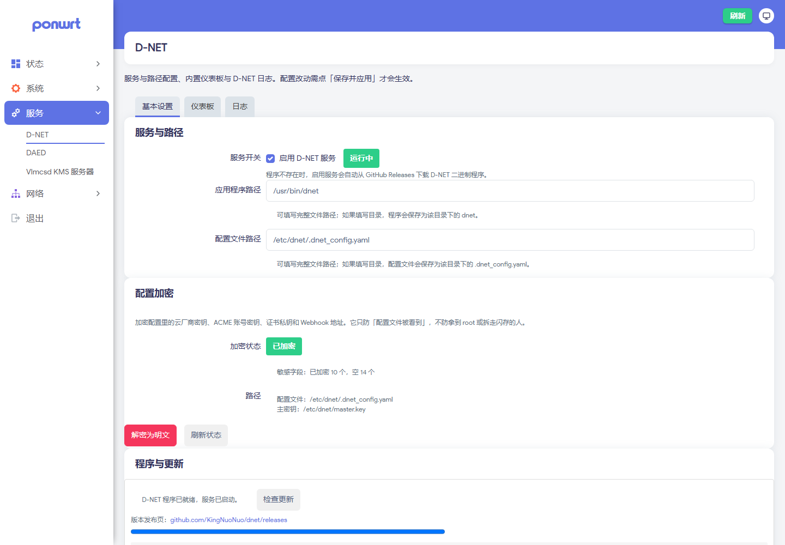
页面顶部三个 Tab：基本设置 / 仪表板 / 日志。
| 区块 | 项目 | 说明 |
|---|---|---|
| 服务与路径 | 服务开关 | 勾选「启用 D-NET 服务」后保存并应用；右侧标签显示「运行中 / 已启用未运行 / 已关闭」 |
| 应用程序路径 | 程序文件路径，或放程序的目录 | |
| 配置文件路径 | YAML 配置文件路径，或放配置的目录 | |
| 配置加密 | 加密状态 | 显示「已加密 / 明文 / 已生成主密钥但配置仍明文 / 缺少主密钥」等；加密云厂商密钥、ACME 账号密钥、证书私钥、Webhook 地址 |
| 操作按钮 | 生成主密钥、一键加密、解密为明文、刷新状态。主密钥只显示一次，务必离线备份 | |
| 程序与更新 | 检查更新 / 立即升级 | 只在你点按钮时才联网检查；升级通过 LuCI 下载校验，版本为 DEV/日期版也能升。发布页链接直达 GitHub |
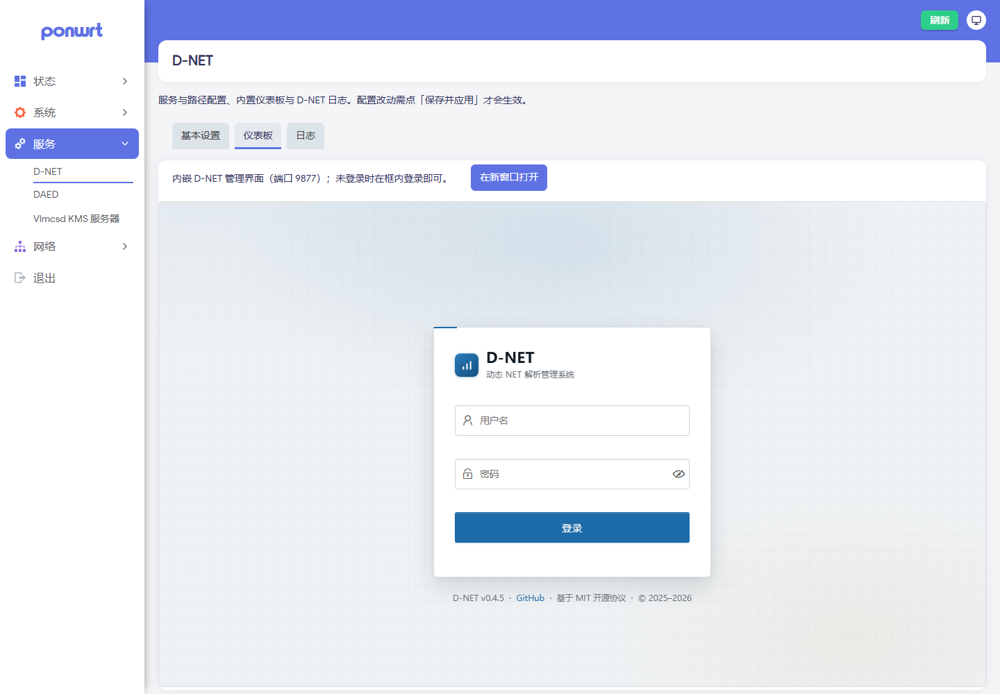
这里把 D-NET 的 9877 页面用 iframe 内嵌进来，不用跳端口、不用开新页。首次使用在框内输入 D-NET 账号密码登录；需要大屏操作可点「在新窗口打开」。切到这个 Tab 才加载 iframe，不影响其它 Tab 速度。
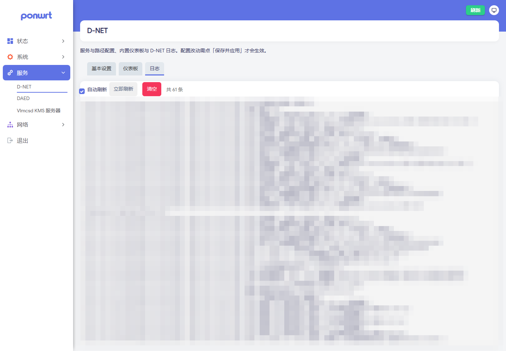
顶栏有「自动刷新」「立即刷新」「清空」和条数统计。日志直接读 logread 里的 D-NET 记录，默认自动刷新。「清空」只标记当前位置作为新起点，不动系统里其它服务的日志，之后的新日志继续显示。
直接访问 http://路由器IP:9877，或在 LuCI 仪表板里登录。首次会要求设置管理员账号密码（在 D-NET Web 的「设置」页修改）。
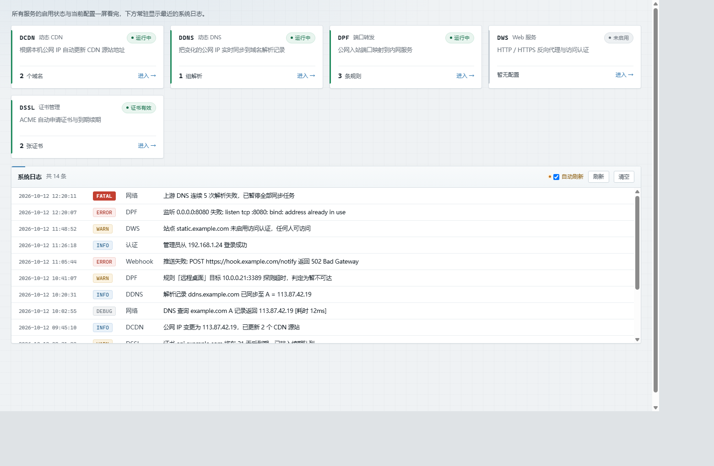
顶部卡片展示 DCDN、DDNS、端口转发、Web 服务、证书的数量与运行状态，点「进入 →」直达对应配置页。下方是系统日志，支持自动刷新、刷新、清空，按级别（FATAL/ERROR/WARN/INFO/DEBUG）着色。
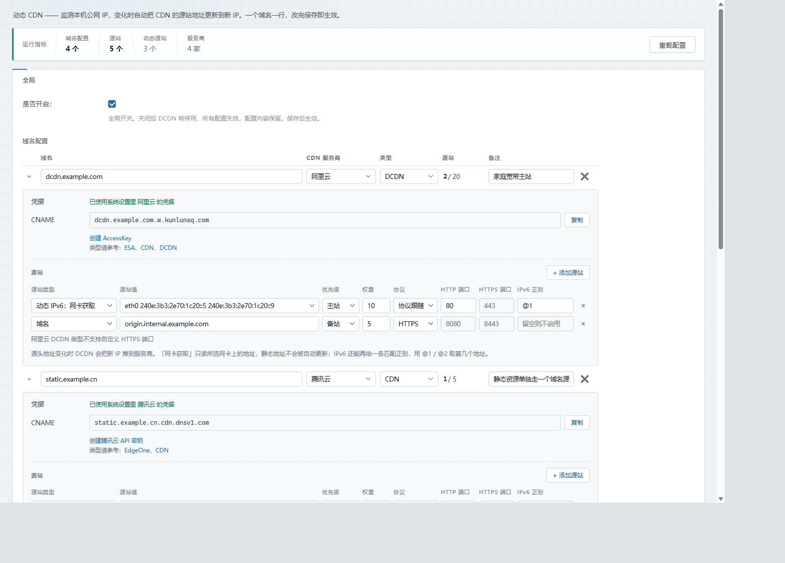
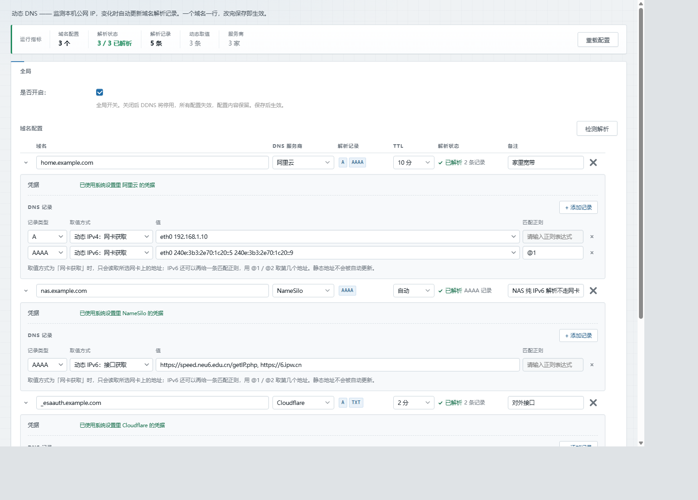
每个域名一行，配置服务商、域名、记录类型（A / AAAA 等）、取值方式（网卡 IPv4/IPv6、接口地址、正则匹配等）。页面会显示当前解析状态与记录值，支持探测核对。
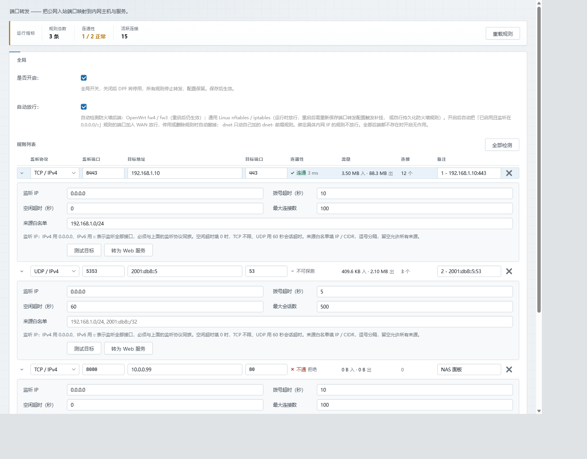
| 字段 | 说明 |
|---|---|
| 监听协议 / 类型 | TCP / UDP 等，决定转发协议 |
| 监听 IP / 端口 | 对外监听地址与端口；IPv6 环境注意选对地址族 |
| 目标协议 / 地址 | 转发到内网的协议与地址 |
| 访问域名 | 按域名匹配入口流量 |
| WAF 策略 | 给这条转发启用哪套 WAF 策略，留空不启用 |
点行尾展开箭头可看到：监听 IP、空闲超时（秒）、来源白名单、拨号超时（秒）、最大连接数、HTTPS 证书、强制 HTTPS、跳过证书校验、连通性探测等。底部的「测试目标」和「转为 Web 服务」两个按钮可直接验证目标或把这条规则转成 Web 服务规则。
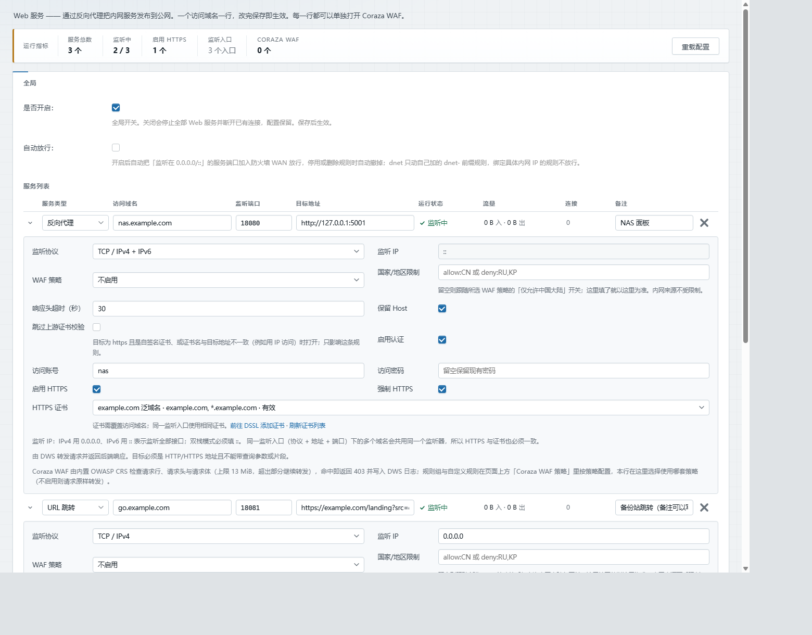
| 字段 | 说明 |
|---|---|
| 监听协议 / IP | HTTP / HTTPS，监听地址 |
| 访问域名 | 外部访问用的域名，一行一个 |
| 目标地址 | 反向代理到内网的服务地址 |
| WAF 策略 | 本行用哪套 WAF 策略，不启用则原样转发 |
| 启用 HTTPS / 证书 | 开启后选证书，可强制 HTTPS 并设重定向状态码 |
| 认证 | 启用后填访问账号 / 访问密码 |
监听 IP、国家/地区限制、保留 Host、跳过上游证书校验、响应头超时（秒）、强制 HTTPS、HTTPS 证书、访问认证等。其中「国家/地区限制」可覆盖 WAF 策略里的「仅允许中国大陆」开关，内网来源始终放行。
入口：D-NET Web 顶部导航的「WAF」页（/waf）。内置 OWASP 核心规则集（CRS），按「策略」管理，Web 服务按行引用策略，不同站点可用不同策略。
| 项目 | 说明 |
|---|---|
| 内置规则组 | 勾选用哪些 CRS 规则组。901/949 等框架组始终启用；默认只放行 GET/HEAD/POST/OPTIONS（911 组），WebDAV 场景要取消勾选 911 |
| PL 偏执等级 | 1–4，越高越严格，默认 1 |
| 异常分阈值 | 默认 5，达到即拦截；调高可降误报 |
| 例外规则 ID | 按规则 ID 关闭单条检测，逗号分隔，如 942100,941110。比整组关闭更精细 |
| 地区限制 | 只放行中国大陆来源，需先把 GeoIP 库放到配置目录；可在 Web 服务行用 allow:CN,HK 覆盖 |
| 自定义规则 SecLang | 追加在内置 CRS 之后，可写任意 Coraza 指令 |
场景：POST /api/v1/download/ 的 body 带本地路径，被 930120 OS File Access Attempt 命中，日志显示「规则 949110，动作 deny，命中 930120」。
做法 A · 全局（影响该策略下所有站点）：在「例外规则 ID」里填 930120，保存。
做法 B · 精细（推荐，只放这个接口）：在「自定义规则 SecLang」里加一行：
SecRule REQUEST_URI "@beginsWith /api/v1/download/" \
"id:1999120,phase:1,pass,nolog,ctl:ruleRemoveById=930120"这样只对下载路径关掉 930120，其它请求和其它服务照常检测。如果误报来自某个参数而不是 URL，把匹配条件换成 ARGS:参数名 或 REQUEST_BODY 配合 @rx。
/etc/dnet/.dnet_config.yaml），dnet 没有 SIGHUP 热重载，必须 /etc/init.d/dnet restart。改前记得备份配置。页面下方还有防护开关：封禁阈值、统计窗口（分钟）、封禁时长（分钟）、限速（请求/秒）、突发值、IP 白名单。命中规则的来源 IP 会被临时封禁并记账，白名单里的 IP 不受封禁和限速影响。
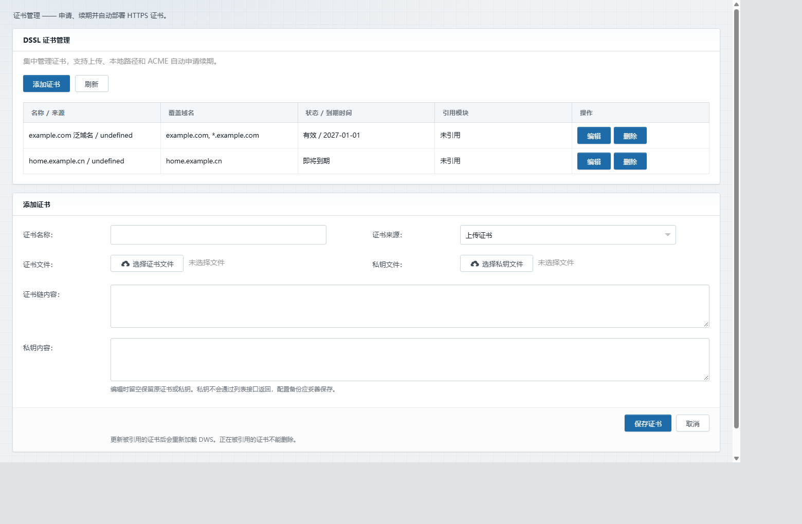
支持两种方式：ACME 自动申请（填域名、邮箱、CA、DNS 挑战凭据）和手动上传（证书文件 / 私钥文件，或直接贴 PEM 内容）。列表显示名称/来源、引用模块、状态/到期时间。
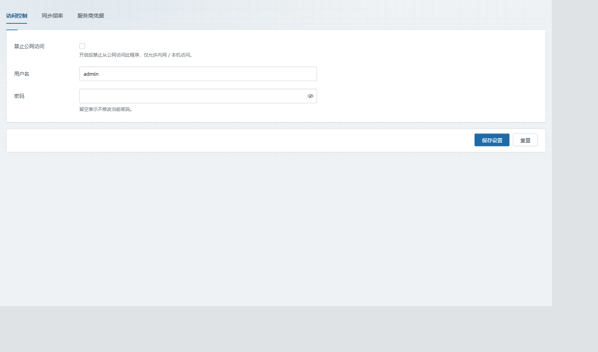
管理员用户名/密码（密码留空表示不改）、同步间隔（10–86400 秒）、DCDN/DDNS 强制同步次数（1–1000）、「禁止公网访问」开关。改密码后保存会自动清空输入框。
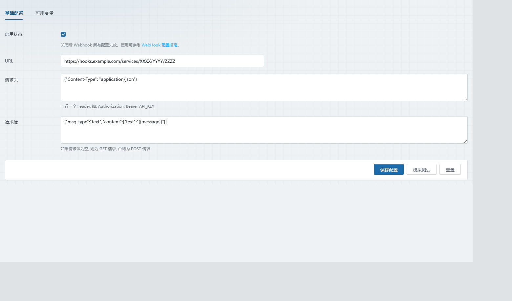
启用后填 URL、请求头、请求体模板，支持用变量占位符（如 {{message}}）插入事件内容。用于推送 DCDN/DDNS 变更、证书到期等通知。
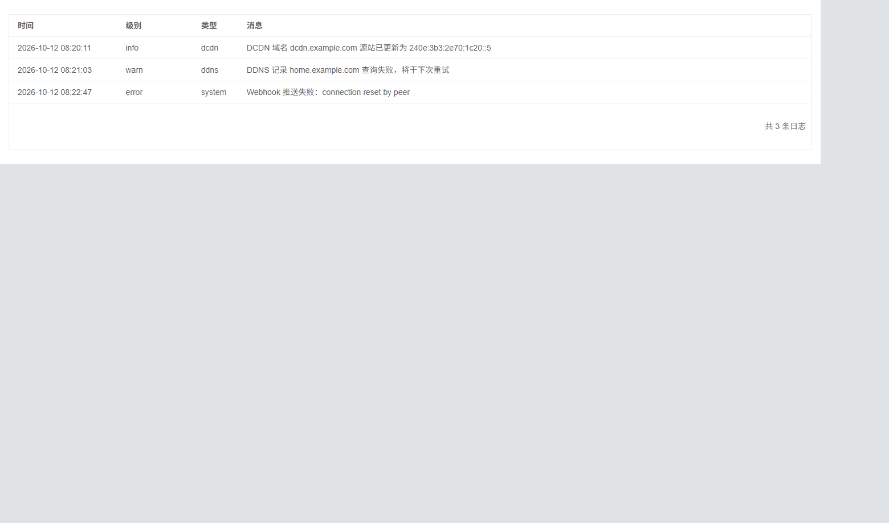
按时间、级别、类型、消息列出运行日志，支持筛选与清空。总览页和 LuCI 插件里也能看日志，三处数据源一致。
取消勾选后必须点「保存并应用」。页面每次提交后都会回读实际配置，正常保存后勾选状态会跟服务实际状态一致。
这是老版本 D-NET 登录页的 frame-bust 脚本导致。v0.4.5 的 login.html 已放行 LuCI 父窗口（同 hostname、非 9877 端口），D-NET 自己的 iframe 和其它站点仍会跳顶层。确认服务是 v0.4.5 及以上。
别关整组、别加 949110。用「例外规则 ID」关单条检测规则，或用「自定义 SecLang」按路径/参数精细放行，见第 10.2 节。改 YAML 配置要重启服务，在 WAF 页保存则即时生效。
要先把 GeoLite2-Country.mmdb 或 dbip-country-lite.mmdb 放到配置文件同级目录（如 /etc/dnet/），页面有下载/更新按钮。没库时开关不拦任何请求。内网/环回/CGNAT 始终放行。
配置的 master.key、GeoIP 库、waf_state.json 都在配置文件同级目录，升级插件不会动 /etc/config/dnet（它是 conffile）。程序路径填外置存储时，确保挂载点稳定。程序被删后，在 LuCI 勾选启用会自动重新下载。
页面是 embed.FS 打进二进制的，改 CSS/HTML 后必须重新编译 dnet 并替换程序；只改配置文件里的字段则即时生效（或在对应页面保存）。